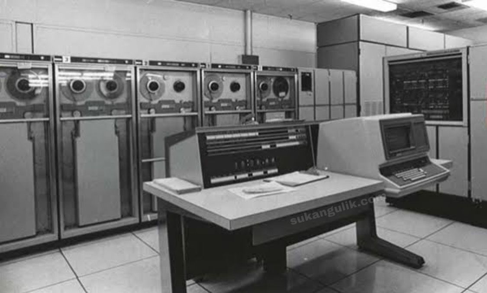
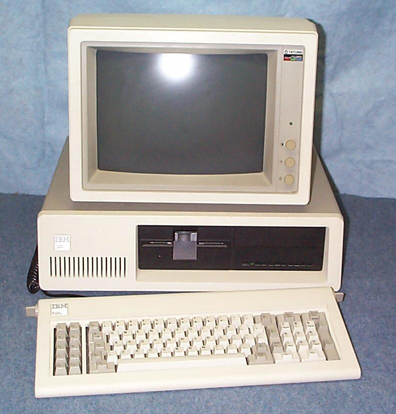
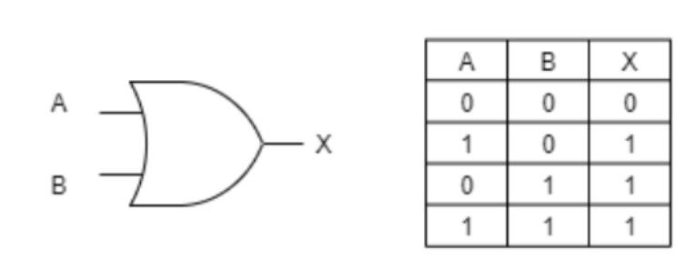
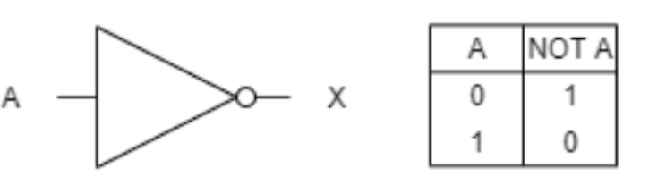
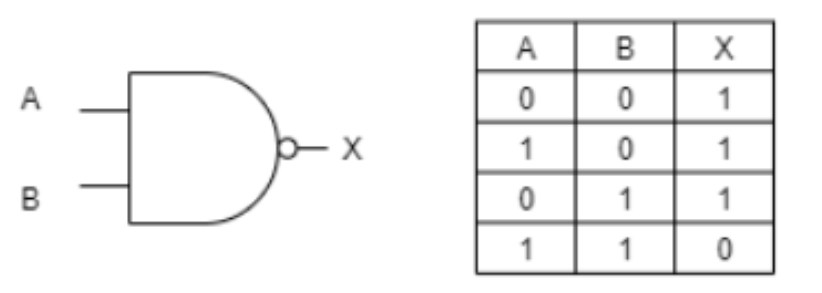
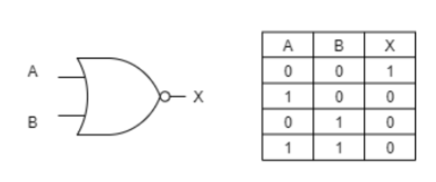
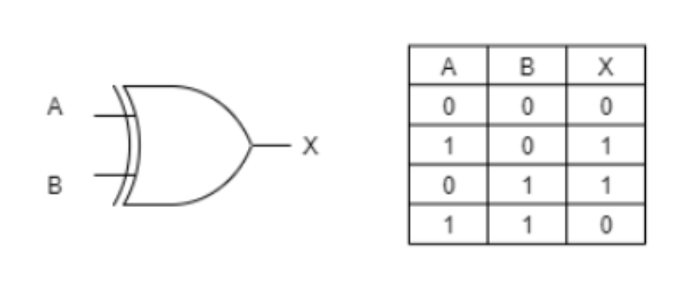

-Ditemukan pada tahun 1940-1956
-Menggunakan Vacuum Tube sebagai komponen digital
-Bahasa yang digunakan bahasa mesin (0 dan 1)
-Membutuhkan ruangan yang luas
-Digunakan antara tahun 1956-1963
-Menggunakan Transistor sebagai komponen digitalnya
-Bahasa yang digunakan bahasa assembly
-Ukuran tidak sebesar generasi 1
-Digunakan tahun 1964-1971
-Menggunakan IC (Integrated Circuits) sebagai komponen digital
-Ukuran lebih kecil dari generasi 2

-Digunakan pada tahun 1971-sekarang
-Menggunakan Mikroprosesorsebagai komponen digital
-Sudah terdapat layar monitor yang dapat menampilkan GUI
-Ukuran bervariasi
-Sekarang dan selanjutnya
-Berupa cloud computing dan AI
Gerbang logika atau logic gates adalah proses pengolahan input bilangan biner dengan teori matematika boolean.
Gerbang logika memiliki fungsi untuk melakukan fungsi logika dasar untuk membentuk sirkuit digital yang terintegrasi. Kebanyakan logic gate menggunakan bilangan biner 0 atau 1 bisa juga disebut true atau false.
Tabel kebenaran adalah tabel yang digunakan untuk melihat nilai kebenaran darisuatu pernyataan.
GERBANG AND
GERBANG OR
GERBANG NOT
GERBANG NAND
GERBANG NOR
GERBANG XOR
GERBANG XNOR